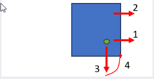

Arbeitsversatzmaße
Die Maschine kann das Arbeitsversatzmaß auf mehrere Arten bestimmen.

Diode positionieren
Der gebräuchlichste Weg ist, den grünen Laserpointer im Tippbetrieb in die gewünschte Position zu bringen und die Schaltfläche Einstellen zu betätigen. Die Maschine verwendet sie als Arbeitsversatzmaß.
Düsenmitte
Diese Option kann besonders dann nützlich sein, wenn die Maschine die Düse bereits am Nullpunkt positioniert hat. Die Maschine verwendet die Düsenmitte als Arbeitsversatzmaß.
Manuell
Bei speziellen Arbeitsgängen oder wenn Sie mit Vorrichtungen arbeiten, gibt Ihnen diese Option eine Möglichkeit, das Arbeitsversatzmaß manuell einzustellen.
2-Punkt-Kantenerkennung
Diese Option ist nützlich, wenn Sie das Arbeitsversatzmaß am Rand des Materials einstellen müssen. Die Maschine fordert Sie auf, die Düse im Tippbetrieb zum ersten Punkt zu bewegen und bestimmt die Ecke der Tafel automatisch. Diese Funktion arbeitet schnell und ist auf Kleinteile ausgerichtet, die an einer Ecke der Tafel platziert werden sollen.
| Die Genauigkeit der 2-Punkt-Strategie ist durch die Genauigkeit der Maschine begrenzt. Daher darf diese Strategie nicht für eine komplette zu schneidende Tafel verwendet werden. |
Die Logik funktioniert wie folgt:

-
Sie wählen mit dem Laser eine Position nahe der gewünschten Nullstellung.
-
Die Maschine führt von der Position aus, an der Sie gestartet sind, eine Ecksuche in X-Richtung durch.
-
Die Maschine führt eine Ecksuche in der nächstgelegenen Mitte zwischen zwei Auflageleisten durch. Dadurch wird die Genauigkeit der Eckmessung maximiert.
-
Die Maschine geht in die Ecke, die sie gefunden hat und schneidet das Teil nach erfolgter Bestätigung.
3-Punkt-Kantenerkennung
Die 3-Punkte-Methode ist wesentlich genauer und arbeitet mit 3 Messpunkten auf einer vollständigen Tafel. Es wird davon ausgegangen, dass wir eine vollständige Tafel (> 1000 x 2000) auf dem Tisch haben, und es werden drei Ecksuchen bei x300, x1500 und y300 durchgeführt, um den Nullpunkt zu finden. Das ist die bevorzugte Methode zum Schneiden einer vollständigen Tafel.

| Wenn die Kantenerkennung auf einer Auflageleiste durchgeführt wird, führt dies zu ungenauen Ergebnissen. Daher wählt die Maschine automatisch eine Position zwischen zwei Auflageleisten. |
| Bevor die Dreipunktkantenerkennung in der Lasermaschine angewandt werden kann, muss die Tafelgröße in der Flux-Software angegeben werden. Stellen Sie sicher, dass das im Programm angegebene Tafelformat mit der tatsächlich in die Maschine geladenen Tafel übereinstimmt. Stellen Sie sicher, dass die Pilotdiode in der Ecke der Tafel platziert ist. |

Durch Auswählen der 3-Punkt-Kantenerkennung im Menü Nullpunktverschiebung wird der folgende Arbeitsgang durchgeführt:
-
Fahren Sie zuerst den Schneidkopf zur Pilotdiode an der (0,0)-Position an der Tafelkante.
-
Der Schneidkopf fährt in diese Position, um die erste Kante der Tafel zu finden.
-
Wenn die erste Kante erkannt wurde, fährt der Schneidkopf in die zweite Position, um die zweite Kante der Tafel zu finden.
-
Wenn die zweite Kante erkannt wurde, sucht der Schneidkopf die dritte Kante der Tafel (um das Steigungsmaß der Tafel zu finden).
-
Auf eine Bestätigung hin fährt die Kopfposition automatisch zur Startposition und führt den Schneidvorgang aus.